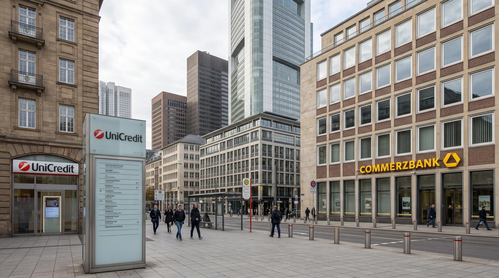

UniCredit and Germany Narrow the Gap on Commerzbank Takeover
A Frankfurt headquarters pledge eases Berlin’s resistance, but ownership, jobs and the final transfer of control remain unresolved.

A political breakthrough, not a completed takeover
UniCredit and the German government have reached common ground on several of the most sensitive conditions surrounding the Italian bank’s proposed takeover of Commerzbank. The agreement marks a significant shift in a contest that has stretched across two years, but it does not mean the transaction has closed or that every ownership question has been settled.
Under commitments outlined by UniCredit Chief Executive Andrea Orcel in a letter to German Finance Minister Lars Klingbeil, the combined group would keep Commerzbank’s headquarters and listed entity in Frankfurt. UniCredit also said it would protect employee rights, continue discussions with the bank’s works council and include German nationals on its own board. Klingbeil told Reuters that Germany supports a swift process and an orderly transfer of control.
The most visible concession came from Berlin. Germany dropped its demand to appoint two members to Commerzbank’s supervisory board, removing a point of disagreement that had complicated negotiations. Commerzbank welcomed the commitments and said its management would work with UniCredit on a joint strategy.
Why Frankfurt matters
Keeping the headquarters and listed entity in Frankfurt is more than a symbolic promise. Commerzbank is a major German lender with a large domestic retail and corporate banking franchise. Its location carries political weight because the government wants strategic decisions, employment relationships and a meaningful part of the bank’s identity to remain anchored in Germany after a foreign takeover.
The pledge also addresses concerns that a cross-border combination could shift senior decision-making to Milan. UniCredit has argued that the enlarged group could operate across national markets while retaining important local capabilities, although a headquarters commitment cannot by itself guarantee that all business lines or roles will remain unchanged.
The transaction would bring together two large euro-area banking groups with more than €1.3 trillion in combined assets, according to Reuters. That scale could strengthen their ability to compete across Europe, but it could also create a more complex organization with overlapping branches, systems and support functions.
The government stake is still an open question
Berlin continues to hold 13.3% of Commerzbank, a position inherited after the German state helped stabilize the lender during the global financial crisis. UniCredit’s letter said the new commitments provide a basis for disposing of that stake. Klingbeil’s statement, however, did not promise that the government would sell it.
That distinction matters. A sale could affect the timetable and market mechanics of the takeover, while retaining the stake would leave the state as a shareholder in a bank whose control is moving toward an Italian group.
UniCredit had built a substantial position in Commerzbank after beginning its approach in 2024. Reuters reported that the Italian lender’s stake had approached 50%, leaving the takeover battle at an advanced stage. Formal control, consolidation onto UniCredit’s balance sheet and the nomination of new supervisory board members are among the steps that still need to follow.
Employees remain central to the integration risk
Commerzbank staff have opposed the takeover in part because Orcel previously discussed job reductions in Germany. The latest commitments refer to employee rights and continued dialogue with the works council, but they do not amount to a guarantee that every position will be retained. The works council’s leadership welcomed the pledge to keep Frankfurt as headquarters while emphasizing that current employment agreements remain valid.
That leaves a difficult balance for the combined bank. Removing duplicated functions can generate merger savings, yet rapid cuts could weaken customer service, damage morale or trigger disputes with employee representatives.
Investors should distinguish between a political agreement and a quantified synergy plan. Until the banks provide more detail, projected savings, integration costs and the timing of any workforce changes remain uncertain. The same discipline applies when assessing reported results: the TTN guide to free cash flow explains why cash generation and investment requirements should be examined together, rather than relying on a single headline measure.
Regulatory clearance does not remove execution risk
The European Commission unconditionally approved the proposed acquisition on November 16, concluding that it would not raise competition concerns in the European Economic Area. Its review examined the overlap in German retail and corporate banking, including trade finance and lending to the country’s medium-sized businesses. The Commission said credible competitors would remain in the relevant markets.
That decision removes an important competition-law hurdle, but regulatory clearance is not the same as final completion. The banks still have to carry out the control transition, settle the government’s role and establish the governance arrangements for the combined group.
The potential benefits are substantial but not automatic. Integration can consume management time and capital, so investors will need to judge the eventual deal terms, financing, asset quality and cost targets rather than assuming that scale alone guarantees stronger returns. As the TTN guide to earnings beats and misses explains, one headline result rarely captures the full picture.
What to watch next
The next milestones are likely to include clarification of the government’s 13.3% holding, formal steps toward control and more detail on the combined bank’s governance and operating model. Employee representatives will look for evidence that the commitments are being implemented, not simply repeated in public statements.
For shareholders, the central issues are the final consideration, the timetable, integration costs and the credibility of any synergy targets. UniCredit has made progress in winning political acceptance; it still has to demonstrate that the resulting institution can deliver financial benefits without undermining the franchise it is buying.